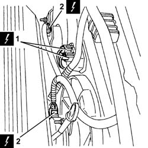
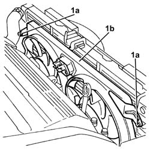

1088E11 fans with single engine duct - r+r
- Path
- Procedures > 10 ENGINE > 1088 ENGINE COOLING > 1088E coolant temperature control devices > 1088E11 fans with single engine duct - r+r
- Kind
- repair procedure (removal / refitting; the operation number is the code)
- Applies to
- engines: 3.2 V6; all production periods
- Interactive page
- https://sloeber94.github.io/elrnDB-a147/en/#/3025000
Applies to: engines: 3.2 V6; all production periods
 Removing
Removing
 Refitting
RefittingProceed with removal 7055B54 under-engine guard - r r .
Proceed with removal 7055B64 Engine compartment DUST shield in front wheel arch (one), left or right - R.R. .
Proceed with removal 7055B42 Additional FRONT WHEEL ARCH (one), left or right - R.R. .
Proceed with removal 7210E10 R.R. CENTRE PILLAR .
Proceed with the removal 5540B76 Front LIGHT CLUSTER with fog light (one), left or right - R.R. with interfering components removed (Right and left sides).
Proceed with removal 7025A34 bonnet lid lock (one) - r+r or repair .
Proceed with removal 7210A15 R.R. HEADLAMP HOUSING/FRONT WING CROSSMEMBER .
1. Disconnect the electrical connections from the resistances for the engine cooling fans.
 | Name | Connector |
|---|---|---|
1 | Engine fan adjustment resistor |
| Name | Connector |
|---|---|---|
1 | Engine fan adjustment resistor -2 |
2. Disconnect the electrical connections from the engine fan motors.
| Name | Connector |
|---|---|---|
2 | Engine electric fan motor |
| Name | Connector |
|---|---|---|
2 | Engine fan motor -2 |

Applies to: engines: 3.2 V6; all production periods
1. Undo the bolts (1a) and remove the fans with the single cooling duct (1b).

Applies to: engines: 3.2 V6; all production periods
Refitting
RemovingPlace the fans with the single engine cooling duct back in their housings and secure them using the bolts.
Connect the electrical connections to the engine fan motors.
Connect the electrical connections to the engine cooling fan resistances.
Proceed with refitting 7210A15 R.R. HEADLAMP HOUSING/FRONT WING CROSSMEMBER .
Proceed with refitting 7025A34 bonnet lid lock (one) - r+r or repair .
Proceed with the refitting 5540B76 Front LIGHT CLUSTER with fog light (one), left or right - R.R. with interfering components removed (Right and left sides).
Proceed with refitting 7210E10 R.R. CENTRE PILLAR .
Proceed with refitting 7055B42 Additional FRONT WHEEL ARCH (one), left or right - R.R. .
Proceed with refitting 7055B64 Engine compartment DUST shield in front wheel arch (one), left or right - R.R. .
Proceed with refitting 7055B54 under-engine guard - r r .
Topics linked from this page (11)
- 5540B76 Front LIGHT CLUSTER with fog light (one), left or right - R.R. with interfering components removed
- 7025A34 bonnet lid lock (one) - r+r or repair
- 7055B42 Additional FRONT WHEEL ARCH (one), left or right - R.R.
- 7055B54 under-engine guard - r r
- 7055B64 Engine compartment DUST shield in front wheel arch (one), left or right - R.R.
- 7210A15 R.R. HEADLAMP HOUSING/FRONT WING CROSSMEMBER
- 7210E10 R.R. CENTRE PILLAR
- N11 Engine electric fan motor
- N12 Engine fan motor -2
- O10 Engine fan adjustment resistor
- O12 Engine fan adjustment resistor -2
Topics that link to this page (4)
- 1020D36 flywheel end oil seal - replace for manual gearbox with hydraulic selection versions
- 1024B11 engine flywheel - r r for manual gearbox with hydraulic selection versions
- 1810A28 clutch - r r for manual gearbox with hydraulic selection versions
- 2110A11 manual gearbox with differential - r r for versions with hydraulic selection